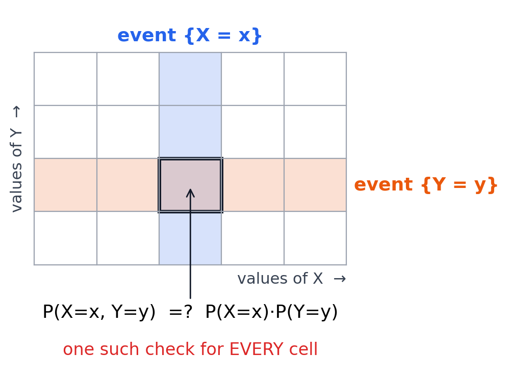
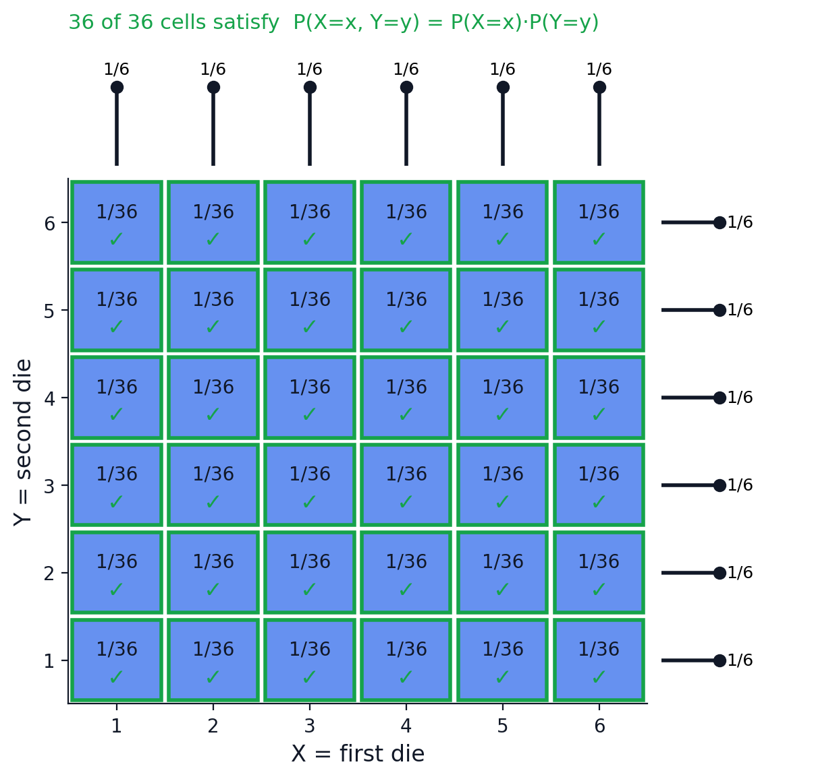
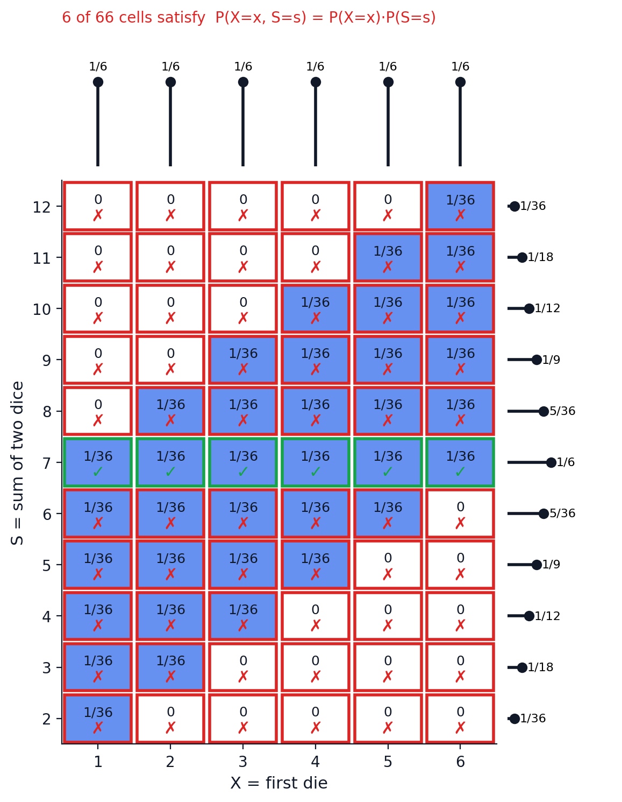

Motivation: Why Random Variables?
- So far, we’ve reasoned about events: subsets of the sample space \(S\)
- But often we don’t care which outcome occurred — only some number attached to it
Example. Toss a fair coin twice. We might ask:
- How many Heads came up?
- How many more Heads than Tails?
- How many Tails came up?
Each question turns an outcome \(s \in S\) into a number. That’s the idea we formalize today.
From Outcomes to Numbers
Press a button — watch each outcome get mapped to a number.
Definition: Random Variable
Given an experiment with sample space \(S\), a random variable (r.v.) is a function
\[X : S \to \mathbb{R}\]
It assigns a real number \(X(s)\) to every outcome \(s \in S\).
For the two-coin example:
| \(s\) | \(X(s)\) (H) | \(Y(s)\) (T) | \(D(s)\) (H \(-\) T) |
|---|---|---|---|
| \(HH\) | 2 | 0 | 2 |
| \(HT\) | 1 | 1 | 0 |
| \(TH\) | 1 | 1 | 0 |
| \(TT\) | 0 | 2 | \(-2\) |
Same sample space, same outcomes — three different functions, three different r.v.’s.
Why “Random” Variable?
- Random: before the experiment, we don’t know which outcome \(s\) will occur — so we don’t know the value \(X(s)\) either
- Variable: the value changes depending on which outcome occurs
- Once the experiment is run and \(s\in S\) is realized, \(X\) crystallizes into the number \(X(s)\) — the mapping itself is not random, only the outcome fed into it is
- Convention:
- random variables are usually denoted by capital letters (\(X, Y, D, \dots\))
- a number that a variable might take is denoted by the corresponding lowercase letter (\(x, y, d, \dots\))
Some more examples of random variables:
- Number of aces in a 5-card hand
- Sum of two dice rolls
- Number of Tails before the first Head, in a sequence of independent coin tosses
- Number of students attending a lecture
- Number of years a person will live
- Your income after graduating from NU
- Tomorrow’s KZT/USD exchange rate
Some r.v.’s arise from simple experiments like throwing dice or taking cards, while others come from ambiguous and complex experiments which can be difficult to even describe.
Simplifying the Picture
Once \(X\) is defined, we can often reason directly about \(X\) — its possible values and their probabilities — without relying on the structure of the probability space.
Questions like \(P(X = 2)\) or “the average value of \(X\)” are questions about \(X\) itself.
This is why random variables are useful: they let us abstract away from the sample space and work with numbers.
Distribution of a r.v.
- Recall that \(X\) counts heads after two coin flips.
- Two natural questions:
- what are the possible values of \(X\)?
- what is the probability of each value?
| x | P(X = x) |
|---|---|
| 0 | 1/4 |
| 1 | 1/2 |
| 2 | 1/4 |
| any other x | 0 |
\(P(X=0) = P(TT) = \dfrac{1}{4}\)
\(P(X=1) = P(HT) + P(TH) = \dfrac14 + \dfrac14 = \dfrac12\)
\(P(X=2) = P(HH) = \dfrac14\)
\(P(X = x) = 0\) for any \(x \notin \{0,1,2\}\) — no outcome produces that value
The support of \(X\) is the set of values \(x\) with \(P(X=x) > 0\). In example \(\text{supp}(X) = \{0,1,2\}\).
The probability mass function (PMF) of \(X\) is a function that gives the probability that a random variable equals to a specific value, denoted by\(p_X(x) = P(X=x)\), defined for every \(x \in \mathbb{R}\) (and equal to \(0\) outside the support).
- PMF is one way how we can discribe the distribution of a r.v.
- It contains all the information about the probabilities of the values that the r.v. can take.
Empirical interpretation of PMF
As you repeat the experiment that generates the r.v. many times, and record the values it takes in a histogram, it will approach the PMF as the number of trials grows.
PMFs of Y and D
\(Y\) = Number of Tails. Since \(Y = 2 - X\), \(Y\) has the same distribution shape as \(X\):
| \(y\) | 0 | 1 | 2 | other |
|---|---|---|---|---|
| \(P(Y=y)\) | \(1/4\) | \(1/2\) | \(1/4\) | \(0\) |
\(P(Y=0)=P(HH)=\frac14\), \(P(Y=1)=P(HT)+P(TH)=\frac12\), \(P(Y=2)=P(TT)=\frac14\)
\(D\) = Heads \(-\) Tails. Since \(D = X - Y = 2X - 2\), its support shifts and stretches:
| \(d\) | \(-2\) | 0 | 2 | other |
|---|---|---|---|---|
| \(P(D=d)\) | \(1/4\) | \(1/2\) | \(1/4\) | \(0\) |
\(P(D=-2)=P(TT)=\frac14\), \(P(D=0)=P(HT)+P(TH)=\frac12\), \(P(D=2)=P(HH)=\frac14\)
The cumulative distribution function (CDF) of a random variable \(X\) is the function
\[F_X(x) = P(X \le x), \qquad x \in \mathbb{R}\]
The CDF is an alternative, fully equivalent description of the distribution of \(X\):
- Given the PMF, you can build \(F_X\) by summing probabilities up to \(x\)
- Given \(F_X\), you can recover the PMF from its jumps
Deriving the CDF of X
Recall \(\text{supp}(X) = \{0,1,2\}\) with \(P(X=0)=\frac14\), \(P(X=1)=\frac12\), \(P(X=2)=\frac14\).
\[F_X(x) = 0 \quad \text{for } x < 0\] No value of \(X\) is negative, so \(P(X \le x) = 0\).
\[F_X(x) = P(X=0) = \frac14 \quad \text{for } 0 \le x < 1\]
\[F_X(x) = P(X=0)+P(X=1) = \frac14+\frac12 = \frac34 \quad \text{for } 1 \le x < 2\]
\[F_X(x) = P(X=0)+P(X=1)+P(X=2) = 1 \quad \text{for } x \ge 2\]
Graph the CDF of X
\(F_X\) is a step function: flat between integers, with jumps at \(x=0,1,2\) — the support of \(X\).
Closed dot = value \(F_X\) actually takes there (right-continuous); open dot = the limit approaching from the left.
The size of each jump at \(x\) is exactly \(P(X=x)\) — the CDF encodes the PMF in its discontinuities.
Discrete versus Continuous Random Variables
A random variable \(X\) is discrete if there is a finite list \(a_1,\dots,a_n\), or an infinite list \(a_1,a_2,\dots\), of values such that
\[P(X \in \{a_1,a_2,\dots\}) = 1\]
That is, \(X\) takes values only in some countable set — its support.
Continuous random variables: \(X\) can take any value in an interval of \(\mathbb{R}\) — e.g. a height, a duration. There are uncountably many possible values, and typically \(P(X=x) = 0\) for every single point \(x\).
A discrete r.v. only accumulates probability at countably many points, so its CDF \(F_X\) is a step function: flat except at the points of the support, where it jumps. A continuous r.v.’s CDF has no jumps — it rises smoothly.
Every PMF \(p_X\) of a discrete random variable \(X\) satisfies:
- Nonnegativity: \(p_X(x) \ge 0\) for all \(x \in \mathbb{R}\)
- Sums to one: \(\displaystyle\sum_{x} p_X(x) = 1\), summing over the support of \(X\)
These two properties fully characterize valid PMFs: any function \(p(x)\) satisfying (1) and (2) on some countable set of values is the PMF of some discrete random variable — nothing else about the underlying experiment matters.
Example: Is This a Valid PMF?
Let
\[p(x) = k^x, \qquad x = 1, 2, 3, \dots\]
for some constant \(k\). Is there a value of \(k\) that makes \(p\) a valid PMF? If so, find it.
We need to check if the two properties hold.
Example: Is This a Valid PMF?
Nonnegativity (\(p(x) \ge 0\)): requires \(k \ge 0\), so that \(k^x \ge 0\) for every integer \(x \ge 1\).
Sums to one: \[\sum_{x=1}^{\infty} k^x = 1\]
This is a geometric series, starting at \(x=1\) — convergent only when \(|k|<1\):
\[\sum_{x=1}^{\infty} k^x = \frac{k}{1-k}, \qquad |k| < 1\]
Setting this equal to \(1\):
\[\frac{k}{1-k} = 1 \;\Longrightarrow\; k = 1-k \;\Longrightarrow\; k = \frac12\]
Check: \(k=\tfrac12\) satisfies both \(k \ge 0\) and \(|k|<1\). So \(p(x) = (1/2)^x\) for \(x=1,2,3,\dots\) is a valid PMF.
Named Distributions
- Some random variables are so common that they have their own names.
- We’ll start with the Bernoulli, then the Binomial, and Hypergeometric distributions.
\(X\) has the Bernoulli distribution with parameter \(p\), written \[X \sim \text{Bern}(p),\] if it takes only two values, \(0\) and \(1\), with probabilities
\[P(X=1) = p, \qquad P(X=0) = 1-p, \qquad 0 < p < 1\]
\(\text{Bern}(p)\) is not one distribution — it’s a family, indexed by the parameter \(p \in (0,1)\). Different \(p\) gives a different distribution.
- Bernoulli trials are experiments with exactly two outcomes — success and failure — with success probability \(p\).
- Think of Bernoulli distribution as the one describing a single Bernoulli trial.
Examples of Bernoulli r.v.s:
- A single coin toss where we let \(X=1\) if Heads, \(0\) if Tails: \(\text{Bern}(1/2)\) for a fair coin
- A die roll where we let \(X=1\) if a 6 comes up, \(0\) otherwise: \(\text{Bern}(1/6)\)
- A student comes to class (\(X=1\)) or not (\(X=0\)): \(X \sim \text{Bern}(p)\) where \(p\) is the probability of attending
Binomial Distribution
- Perform \(n\) independent \(\text{Bern}(p)\) trials.
- Let \(X\) be the number of successes.
- Then \(X\) has the Binomial distribution with parameters \(n\) and \(p\):
\[X \sim \text{Bin}(n,p)\]
- Again, a family of distributions — this time indexed by two parameters, \(n\) (number of trials) and \(p\) (success probability per trial).
- Notice that we defined the Binomial distribution in terms of a story about where \(X\) comes from. This is often more useful than giving the PMF directly, because it allows you to recognize distributions in new problems without having to rederive the PMF from scratch.
Example: Toss a fair coin \(n\) times. Let \(X\) = number of Heads.
Each toss is a \(\text{Bern}(1/2)\) trial, and the tosses are independent — exactly the Binomial story. So
\[X \sim \text{Bin}(n, 1/2)\]
Note: our very first example — two coin tosses, \(X\) = number of Heads — was \(\text{Bin}(2, 1/2)\) all along.
PMF of the Binomial
If \(X \sim \text{Bin}(n,p)\), then what are its support and PMF?
- Support is \(\{0,1,\dots,n\}\) — you can have anywhere from \(0\) to \(n\) successes
- PMF is \[P(X=k) = \binom{n}{k} p^k (1-p)^{n-k}, \qquad k = 0,1,\dots,n\]
Where does PMF come from? Let’s derive it.
Deriving Binomial PMF To derive PMF means to find \(P(X=x)\) for all \(x\in \mathbb{R}\). Lets do this in steps.
- The support of \(X\) is \(\{0,1,\dots,n\}\), so we only need to find \(P(X=k)\) for \(k=0,1,\dots,n\).
- Lets try to find \(P(X=0)\) first. This is the probability of getting exactly 0 successes in \(n\) independent Bernoulli trials.
- This can happen in only one way – all trials must be failures.
- Probability of each individual trial being a failure is \(1-p\), so by independence, the probability of all \(n\) trials being failures is \((1-p)^n\). Hence, \(P(X=0) = (1-p)^n\).
- Lets find \(P(X=1)\) next. This is the probability of getting exactly 1 success in \(n\) independent Bernoulli trials.
- There are \(n\) different ways this can happen – the success can occur in any one of the \(n\) trials, with all other trials being failures.
- Probability of each individual trial being a success is \(p\), and probability of each individual trial being a failure is \(1-p\). So by independence, the probability of any specific sequence with exactly 1 success and \(n-1\) failures is \(p(1-p)^{n-1}\).
- Since there are \(n\) different sequences that give exactly 1 success, we have \(P(X=1) = n p (1-p)^{n-1}\).
Now lets do it for general \(k\).
- Fix \(k \in \{0,1,\dots,n\}\). The event \(\{X = k\}\) is: exactly \(k\) of the \(n\) trials are successes.
- The probability of this event is the sum of the probabilities of all sequences of \(n\) trials that have exactly \(k\) successes.
- The probability of any specific sequence with exactly \(k\) successes and \(n-k\) failures is the product of the individual trial probabilities, by independence: \[p^k (1-p)^{n-k}.\]
- There exactly \(\binom{n}{k}\) sequences of \(n\) trials that have exactly \(k\) successes (choose which \(k\) of the \(n\) trials are successes).
- Summing over all sequences with exactly \(k\) successes, we have: \[P(X=k) = \binom{n}{k} p^k (1-p)^{n-k}.\]
Two Ways to Define a Random Variable
By distribution: give the PMF (or CDF) directly, as a formula.
By story: describe the generative process — e.g. “count successes in \(n\) independent trials.”
Recongizing the distribution from the story is a key skill here.
Some More Binomial Examples
- Roll 6 dice — number of times 6 appears: \(\text{Bin}(6, 1/6)\)
- A monkey randomly answers \(n\) multiple-choice questions (4 options each) — number of correct answers: \(\text{Bin}(n, 1/4)\)
- Number of likes a post receives, if each of \(n\) viewers independently likes it with probability \(p\): \(\text{Bin}(n,p)\)
- Number of loans (out of \(n\) issued) that get repaid, if each is repaid independently with probability \(p\): \(\text{Bin}(n,p)\)
- An airline sells \(n\) tickets for a flight; if each ticketed passenger independently shows up with probability \(p\) — number of no-shows: \(\text{Bin}(n, 1-p)\) (the basis for overbooking policy)
- A firm sends out \(n\) job offers; if each candidate independently accepts with probability \(p\) — number of acceptances: \(\text{Bin}(n,p)\)
The last few examples are simplifications — real likes/repayments/no-shows etc are rarely exactly independent and have identical probabilities — but Binomial is often a reasonable first model.
Unlike the PMF, there is no simple closed-form formula for the Binomial CDF.
We’re stuck with the sum itself:
\[F_X(x) = P(X \le x) = \sum_{k=0}^{\lfloor x \rfloor} \binom{n}{k} p^k (1-p)^{n-k}\]
In practice this is computed numerically (software, tables) rather than simplified algebraically.
Comparing Binomial PMFs
Toggle each distribution on to see how \(n\) and \(p\) shape the PMF.
Larger \(n\) spreads the distribution out; \(p\) shifts where its mass is centered. All three still sum to \(1\).
Another Example
- Deal a \(4\)-card hand from a standard \(52\)-card deck. Let \(X\) = number of aces.
- This looks like counting successes in \(4\) trials — is \(X \sim \text{Bin}(4, 4/52)\)?
Each card drawn is “ace or not” — that part matches the Binomial story. What might break down?
Binomial requires the trials to be independent, each with the same success probability \(p\).
Here, cards are dealt without replacement. After the first card, the deck has changed:
- If the first card was an ace: \(3\) aces left in \(51\) cards
- If not: \(4\) aces left in \(51\) cards
The probability of “ace” on draw 2 depends on the outcome of draw 1 — the trials are not independent, and \(p\) isn’t fixed. The Binomial model doesn’t apply.
The Hypergeometric Distribution
An urn contains \(w\) white (success) balls and \(b\) black (failure) balls, \(N = w+b\) total. Draw \(n\) balls without replacement. Let \(X\) = number of white balls drawn. Then
\[X \sim \text{HGeom}(w,b,n)\]
A family indexed by three parameters: \(w\), \(b\), and \(n\).
Our aces problem: \(w=4\) (aces), \(b=48\) (other cards), \(n=4\) (hand size) — \(X \sim \text{HGeom}(4,48,4)\).
Simulating the Urn
Draw 3 balls from an urn of 4 red (success) and 6 gray (failure) balls — without replacement.
If \(X \sim \text{HGeom}(w,b,n)\), then
\[P(X=k) = \frac{\dbinom{w}{k}\dbinom{b}{n-k}}{\dbinom{w+b}{n}}\]
for integers \(k\) with \(0 \le k \le w\) and \(0 \le n-k \le b\).
Numerator: choose \(k\) white and \(n-k\) black. Denominator: total ways to choose any \(n\) from \(N=w+b\).
Hypergeometric Examples
Aces in a 4-card hand: \(w=4\) (aces), \(b=48\), \(n=4\).
\[P(X=2) = \frac{\binom{4}{2}\binom{48}{2}}{\binom{52}{4}} = \frac{6 \times 1128}{270725} = 0.025\]
Quality control: a batch of \(20\) items has \(3\) defective. Inspect \(5\) at random without replacement — number of defectives found is \(\text{HGeom}(3,17,5)\).
Committee selection: a class has \(12\) economics majors and \(8\) other majors. Pick a committee of \(6\) students at random — number of economics majors on it is \(\text{HGeom}(12,8,6)\).
Deriving the Hypergeometric PMF
Urn: \(w\) white, \(b\) black, draw \(n\) without replacement. Start with the simplest case.
- \(\{X=0\}\): none of the \(n\) drawn balls are white — all \(n\) are black.
- Choose \(0\) white (from \(w\)) and \(n\) black (from \(b\)), out of all \(\binom{w+b}{n}\) equally likely samples of size \(n\): \[P(X=0) = \frac{\binom{w}{0}\binom{b}{n}}{\binom{w+b}{n}}\]
- \(\{X=1\}\): exactly one white ball among the \(n\) drawn.
- Choose \(1\) white (from \(w\)) and \(n-1\) black (from \(b\)): \[P(X=1) = \frac{\binom{w}{1}\binom{b}{n-1}}{\binom{w+b}{n}}\]
Deriving the Hypergeometric PMF
The pattern is now clear — for any valid \(k\), choose \(k\) white and \(n-k\) black:
\[P(X=k) = \frac{\binom{w}{k}\binom{b}{n-k}}{\binom{w+b}{n}}\]
Same reasoning as \(k=0,1\) — just replace the fixed small number with the general \(k\).
Sampling: With or Without Replacement
Same urn story (white/black balls, count successes), but:
- With replacement (each draw independent, same composition every time) \(\to\) \(\text{Bin}(n,p)\) with \(p = w/(w+b)\)
- Without replacement (composition changes after each draw) \(\to\) \(\text{HGeom}(w,b,n)\)
As \(N=w+b\) grows large relative to \(n\), removing a few balls barely changes the composition — \(\text{HGeom}\) starts to look like \(\text{Bin}\).
Comparing Hypergeometric PMFs
Same sample size \(n = 5\), different urns. The dashed gray series is the Binomial with \(p = w/(w+b)\) — sampling the same urn with replacement.
\(\text{HGeom}(10,10,5)\) is symmetric — half the urn is white, so \(k\) and \(5-k\) are equally likely.
Shrinking \(w\) to \(5\) out of \(20\) shifts the mass left: the fraction of white balls, \(w/(w+b)\), plays the role that \(p\) plays for the Binomial.
Hypergeometric vs Binomial
Turn on \(\text{HGeom}(10,10,5)\), \(\text{HGeom}(50,50,5)\) and \(\text{Bin}(5,0.5)\) together — all three have the same white fraction \(1/2\).
| \(k\) | 0 | 1 | 2 | 3 | 4 | 5 |
|---|---|---|---|---|---|---|
| \(\text{HGeom}(10,10,5)\) | \(.016\) | \(.135\) | \(.348\) | \(.348\) | \(.135\) | \(.016\) |
| \(\text{HGeom}(50,50,5)\) | \(.028\) | \(.153\) | \(.319\) | \(.319\) | \(.153\) | \(.028\) |
| \(\text{Bin}(5,0.5)\) | \(.031\) | \(.156\) | \(.312\) | \(.312\) | \(.156\) | \(.031\) |
The largest gap from the Binomial is \(0.036\) when \(N=20\), but only \(0.006\) when \(N=100\).
Drawing \(5\) balls from an urn of \(100\) barely changes its composition, so the draws are almost independent with a fixed \(p\). Drawing \(5\) from an urn of \(20\) removes a quarter of it — the dependence is visible.
Without replacement, the extremes are less likely: \(P(X=0)\) drops from \(.031\) to \(.016\). Each white ball drawn makes the next one harder to get, which pulls samples toward the middle.
Are These Really Valid PMFs?
We’ve now written down three PMFs. For \(\text{Bern}(p)\), checking \(p_X(x)\ge0\) and \(\sum p_X(x) = p + (1-p) = 1\) is immediate.
But \(\text{Bin}(n,p)\) and \(\text{HGeom}(w,b,n)\) are more complicated sums. Are we sure they sum to \(1\)?
Nonnegativity is clear for both (binomial coefficients and probabilities are \(\ge 0\)). The real question is the sum-to-one property — let’s check it.
Binomial Sums to One: Newton’s Binomial Theorem
Recall the binomial theorem: for any \(a,b\) and integer \(n\ge0\),
\[(a+b)^n = \sum_{k=0}^{n} \binom{n}{k} a^k b^{n-k}\]
Set \(a=p\), \(b=1-p\):
\[\sum_{k=0}^{n} \binom{n}{k} p^k (1-p)^{n-k} = (p + (1-p))^n = 1^n = 1\]
This is exactly \(\sum_k P(X=k)\) for \(X\sim\text{Bin}(n,p)\) — confirmed valid.
Hypergeometric Sums to One: Vandermonde’s Identity
For nonnegative integers \(m,l,r\),
\[\sum_{k=0}^{r} \binom{m}{k}\binom{l}{r-k} = \binom{m+l}{r}\]
Apply with \(m=w\), \(l=b\), \(r=n\):
\[\sum_{k=0}^{n} \binom{w}{k}\binom{b}{n-k} = \binom{w+b}{n}\]
Divide both sides by \(\binom{w+b}{n}\):
\[\sum_{k} P(X=k) = \sum_{k} \frac{\binom{w}{k}\binom{b}{n-k}}{\binom{w+b}{n}} = \frac{\binom{w+b}{n}}{\binom{w+b}{n}} = 1\]
Proving Vandermonde: A Story Proof
Consider a group of \(m\) men and \(l\) women. Count the number of ways to choose a committee of \(r\) people — two ways.
Directly: choose any \(r\) people from the \(m+l\) total: \(\binom{m+l}{r}\) ways.
By splitting on \(k\) = number of men on the committee: for each \(k=0,\dots,r\), choose \(k\) men (from \(m\)) and \(r-k\) women (from \(l\)): \(\binom{m}{k}\binom{l}{r-k}\) ways. Summing over all \(k\) counts every committee exactly once.
\[\sum_{k=0}^{r} \binom{m}{k}\binom{l}{r-k} = \binom{m+l}{r}\]
Functions of One Random Variable
Often we are interested in quantaties that are functions of random variables.
- Let \(X\) be the number of H after two coin tosses:
- \(2-X\) is the number of T
- \(|2-2X|\) is the absolute difference between H and T
Each of these is a new random quantity built out of \(X\). If we know the distribution of \(X\), can we get the distribution of \(g(X)\)?
Illustration of the two functions
For an experiment with sample space \(S\), an r.v. \(X\), and a function \(g : \mathbb{R} \to \mathbb{R}\), the random variable \(g(X)\) is the function that maps
\[s \;\longmapsto\; g(X(s)) \qquad \text{for all } s \in S\]
\(g(X)\) is a function from \(S\) to \(\mathbb{R}\) — so it is a random variable in its own right.
Why is \(g(X)\) Random?
- The function \(g\) is not random.
- What is random is the input: we don’t know which \(s\) will occur, so we don’t know \(X(s)\) which is the input into \(g\).
- Once the experiment runs and \(X\) crystallizes to a number, \(g(X)\) crystallizes too.
One-to-One Transformations
The function \(g(x)=2-x\) maps each \(x\) into a distinct \(g(x)\), i.e. it is one-to-one function.
If \(g\) is one-to-one (distinct inputs give distinct outputs), then the support of \(Y = g(X)\) is \(\{g(x) : x \in \text{supp}(X)\}\) and
\[P\big(Y = g(x)\big) = P\big(g(X) = g(x)\big) = P(X = x)\]
| \(x\) | \(P(X = x)\) |
|---|---|
| \(x=0\) | \(1/4\) |
| \(x=1\) | \(1/2\) |
| \(x=2\) | \(1/4\) |
| \(y\) | \(P(Y = y)\) |
|---|---|
| \(2\) | \(1/4\) |
| \(1\) | \(1/2\) |
| \(0\) | \(1/4\) |
With \(X \sim \text{Bin}(5,0.4)\) and \(R = 300X + 100\):
Find pmf of \(R\).
When \(g\) is Not One-to-One
The function \(g(x)=|2-2X|\) is not one-to-one – both 0 and 2 are mapped into the same output 2.
So \(P(g(X)=2)\) cannot be the probability of one \(x\) — two values produce that output.
When several \(x\)’s map to the same \(y\), the event \(\{g(X) = y\}\) is the union of the corresponding disjoint events \(\{X = x\}\). Add their probabilities.
\[P(g(X)=2) = P(X=0)+P(X=2) = 1/2\]
Theorem: PMF of \(g(X)\)
Let \(X\) be a discrete r.v. and \(g : \mathbb{R} \to \mathbb{R}\). The support of \(g(X)\) is the set of all \(y\) such that \(g(x) = y\) for at least one \(x\) in the support of \(X\), and
\[P\big(g(X) = y\big) \;=\; \sum_{x \,:\, g(x) = y} P(X = x)\]
- List the support of \(X\) and its probabilities
- Compute \(g(x)\) for each \(x\) in the support
- Group the \(x\)’s that share the same value of \(g(x)\)
- Add the probabilities inside each group
One-to-one is just the special case where every group has size one.
Watch the PMF Transform
\(X \sim \text{Bin}(4, 1/2)\) on top. Pick a transformation and watch where the probability mass goes.
What the Animation Shows
- \(Y = X+2\): the whole picture slides right. Nothing merges.
- \(Y = 2X\): the picture stretches horizontally. The gaps are real — \(2X\) can never be odd.
- \(Y = |X-2|\): bars fold onto each other. \(x=1\) and \(x=3\) merge: \(\tfrac{4}{16}+\tfrac{4}{16} = \tfrac{8}{16}\).
- \(Y = I(X\ge 3)\): five bars collapse into two.
A transformation moves probability mass sideways along the axis. Mass is never created or destroyed — it is only relocated, and sometimes piled up.
Functions of Several Random Variables
Most interesting quantities depend on more than one random input.
- Total revenue of two shops: \(X + Y\)
- The winner of a two-player game: \(\max(X, Y)\)
- The bottleneck in a two-stage process: \(\min(X, Y)\)
- The gap between two exam scores: \(|X - Y|\)
- A portfolio of two KASE stocks: \(w_1 X + w_2 Y\)
The logic is exactly the same as before — only now the machine takes two inputs.
Definition: Function of Two R.V.s
Given an experiment with sample space \(S\), if \(X\) and \(Y\) are r.v.s that map \(s \in S\) to \(X(s)\) and \(Y(s)\), then \(g(X,Y)\) is the r.v. that maps
\[s \;\longmapsto\; g\big(X(s),\, Y(s)\big)\]
Interpretation is the same as always: if we observe \(X = x\) and \(Y = y\), then \(g(X,Y)\) crystallizes to \(g(x,y)\).
\(X + Y\) feels obvious. \(\max(X,Y)\) feels stranger — but it is no different: observe \(X=3\), \(Y=5\), and \(\max(X,Y)\) crystallizes to \(5\).
One Sample Space for Both
\(X\) and \(Y\) must be defined on the same sample space \(S\). Otherwise \(g(X(s), Y(s))\) is meaningless.
This is never a real restriction — we just build \(S\) rich enough.
Example. \(X\) comes from a coin flip, \(Y\) from a die roll. Separately we had
\[S_1 = \{H, T\}, \qquad S_2 = \{1,2,3,4,5,6\}\]
Redefine both on the product space
\[S = S_1 \times S_2 = \{(s_1, s_2) : s_1 \in S_1,\, s_2 \in S_2\}\]
with \(X(s_1,s_2)\) depending only on \(s_1\) and \(Y(s_1,s_2)\) only on \(s_2\). Now \(X + Y\), \(XY\), \(\max(X,Y)\) all make sense.
Example: The Dice Duel
At the NU board-game club, Aigerim and Nurlan each roll a fair die. Let \(X\) be Aigerim’s roll and \(Y\) be Nurlan’s roll.
\(S\) has \(36\) equally likely outcomes \((x,y)\). Here are \(7\) of them:
| \(s\) | \(X\) | \(Y\) | \(\max(X,Y)\) | \(\|X-Y\|\) |
|---|---|---|---|---|
| \((1,2)\) | 1 | 2 | 2 | 1 |
| \((1,6)\) | 1 | 6 | 6 | 5 |
| \((2,5)\) | 2 | 5 | 5 | 3 |
| \((3,1)\) | 3 | 1 | 3 | 2 |
| \((4,3)\) | 4 | 3 | 4 | 1 |
| \((5,4)\) | 5 | 4 | 5 | 1 |
| \((6,6)\) | 6 | 6 | 6 | 0 |
Each column is a random variable: a number attached to every outcome.
The 36-Cell Grid
Every outcome is one cell. To get a PMF, count the cells.
Reading the Grid: \(\max(X,Y)\)
From counting cells:
\[P(\max = 1) = \tfrac{1}{36},\; P(\max = 2) = \tfrac{3}{36},\; \dots,\; P(\max = 6) = \tfrac{11}{36}\]
The counts are \(1, 3, 5, 7, 9, 11\) — each new value adds an L-shaped strip to the grid.
We can also compute directly, without the picture:
\[ \begin{aligned} P(\max(X,Y) = 5) &= P(X{=}5, Y{\le}4) + P(X{\le}4, Y{=}5) + P(X{=}5,Y{=}5)\\ &= 2 \cdot \tfrac{4}{36} + \tfrac{1}{36} \;=\; \tfrac{9}{36} \end{aligned} \]
The two “one is 5, the other is smaller” cases are disjoint, but neither includes the corner cell \((5,5)\) — so it must be added separately. Splitting a max/min event into disjoint pieces is a standard trap.
Your Turn
Still the dice duel, \(X\) and \(Y\) independent fair dice.
Find \(P(\min(X,Y) \ge 3)\) — try to see it in the grid before computing.
Find \(P(|X - Y| \le 1)\).
Aigerim wins if \(X > Y\). Find \(P(\text{Aigerim wins})\) using symmetry, not counting.
- \(\min \ge 3\) means both dice are \(\ge 3\): a \(4 \times 4\) block of cells, so \(\tfrac{16}{36} = \tfrac49\).
- Counts: \(|X-Y| = 0\) gives \(6\) cells, \(|X-Y|=1\) gives \(10\). Total \(\tfrac{16}{36} = \tfrac49\).
- \(P(X>Y) = P(Y>X)\) by symmetry, and \(P(X=Y) = \tfrac{6}{36}\). So \[P(X>Y) = \tfrac12\left(1 - \tfrac16\right) = \tfrac{5}{12}\]
Independence of random variables
\(X\) and \(Y\) are independent if \[P(X \le x,\ Y \le y) = P(X \le x)\,P(Y \le y) \quad \text{for all } x, y \in \mathbb{R}.\] For discrete \(X, Y\) this is equivalent to \[P(X = x,\ Y = y) = P(X = x)\,P(Y = y) \quad \text{for all } x, y.\]
- Intuition: learning about \(X\) tells you nothing about \(Y\)
- \(X_1,\dots,X_n\) independent: \(P(X_1=x_1,\dots,X_n=x_n)=P(X_1=x_1)\cdots P(X_n=x_n)\) for all \(x_1,\dots,x_n\)
- i.i.d. = independent + identically distributed — e.g. the \(n\) Bernoulli trials behind \(\text{Bin}(n,p)\)
From events to random variables
- Each value pair \((x,y)\) gives two events: \(\{X=x\}\) and \(\{Y=y\}\)
- \(X, Y\) independent \(\iff\) \(\{X=x\}\) and \(\{Y=y\}\) are independent for every pair \((x,y)\)
- Via conditioning: \(P(Y=y \mid X=x) = P(Y=y)\) for all \(y\), whenever \(P(X=x)>0\)

Independence of two events: one equation. Independence of two r.v.s: one equation per cell of the table.
Checking independence = checking many conditions
- \(X\) takes \(m\) values, \(Y\) takes \(n\) values \(\Rightarrow\) \(m \times n\) equations
- Two dice: \(6\times 6 = 36\) equations; first die and sum: \(6 \times 11 = 66\)
- Some cells can satisfy the product rule even when \(X, Y\) are dependent (Example 3)
Roll two fair dice. \(X\) = first die, \(Y\) = second die.
- \(P(X=x)=P(Y=y)=\tfrac16\)
- 36 equally likely outcomes
- \(\tfrac1{36}=\tfrac16\cdot\tfrac16\) in all 36 cells
- \(\Rightarrow\) \(X, Y\) independent (in fact i.i.d.)

Roll one fair die. \(X = 1\) if the roll is even, \(Y = 1\) if the roll is \(\le 2\) (\(0\) otherwise).
- \(P(X=1)=\tfrac12\), \(P(Y=1)=\tfrac13\)
- \(P(X=1, Y=1)=P(\text{roll}=2)=\tfrac16=\tfrac12\cdot\tfrac13\)
- All 4 cells pass \(\Rightarrow\) independent
- But if we change \(Y=1\) to mean “roll \(\le 3\)” (otherwise): \(P(X=1,Y=1)=\tfrac16 \ne \tfrac12\cdot\tfrac12\) \(\Rightarrow\) dependent

Roll two fair dice. \(X\) = first die, \(S\) = sum of both dice.
- Zero cell: \(P(X=1, S=12)=0\), but \(P(X=1)\,P(S=12)=\tfrac16\cdot\tfrac1{36}=\tfrac1{216}\)
- \(\Rightarrow\) dependent — one failure is enough
- 30 of the 66 cells are zero cells
- Trap: the whole row \(S=7\) passes: \(P(X=x, S=7)=\tfrac1{36}=\tfrac16\cdot\tfrac16\) for every \(x\)
- Checking only \(S=7\) gives the wrong answer

Independent or dependent?
- Last digit of your student ID and your ECON211 final score — independent: nothing links them
- Your Quiz 1 score and your Quiz 2 score — dependent: same student, same study habits
- Your die roll at one Nauryz fair booth and your friend’s roll at the next booth — independent: separate physical mechanisms
- Minutes late to a 9:00 class: you and your roommate — dependent: same bus, same −30°C buran morning
- USD/KZT rate next month and the tenge price of a new iPhone — dependent: imports are priced off the dollar
Most real-world dependence comes from a shared cause — weather, the economy, ability. Variables that are independent given the cause are dependent once the cause is unknown.